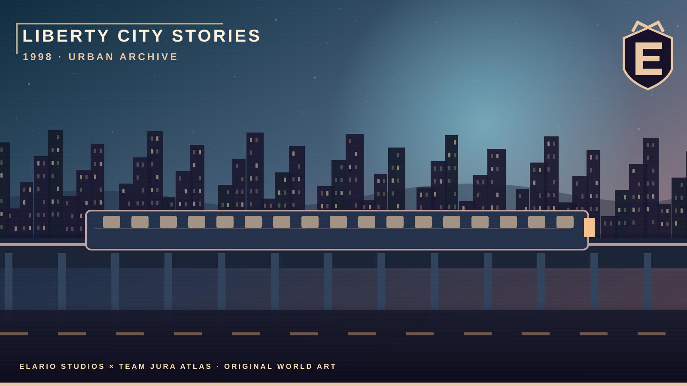

World-class map navigation
GTA V, Online, VI, and GTA IV explorers with source-based maps, 2D/3D controls where available, categories and map search.
Open V explorer ↗Team Jura Atlas is a growing collection of GTA companion maps, source-aware research, route planners and community tools. Our goal: a great interface without sacrificing source honesty.
GTA V, Online, VI, and GTA IV explorers with source-based maps, 2D/3D controls where available, categories and map search.
Open V explorer ↗
Each map has its own destination; reused coordinate engines are distinguished from external reference gateways.
Explore Liberty City ↗
Confirmed and provisional VI research are labeled. When a source is missing, we tell you instead of inventing markers.
Verification center ↗Our active Cloudflare website follows the development branch. We preserve game-specific maps, local player progress, and licensed sources; every update must pass source, browser and visual checks. The protected main reference branch is updated only with owner approval.
The current short motion preview and community storyboard are an early look at a larger film. A complete 3–5 minute production has not yet been released.